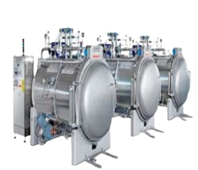
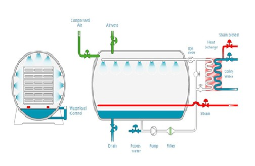
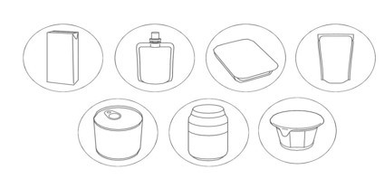
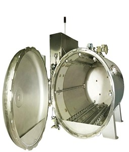
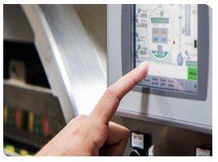
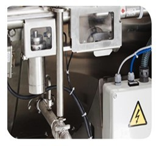

Process equipment
Bottle Sterilizers
Steam and water spray sterilizers for 600 to 3,000 bottles a batch. They sterilise and cool shelf-stable foods, and pasteurise and chill refrigerated foods, in cans, bottles, pouches and trays. Built by Tavron Engineers in Chennai, India, since 2004.

- Capacity
- 600, 1,200, 1,800, 2,400 or 3,000 bottles
- Construction
- SS 304 / SS 316
- Process
- Steam and water spray, pressurised hot water
- Models
- Static, oscillating or rotary
- Containers
- Cans, bowls, pouches and trays of metal, glass, foil, plastic film or paperboard
- Control
- PLC and HMI; flow-meter control of water recirculation; PID steam control valves
- Safety
- Designed to pressure vessel and machine safety regulations
How it works
Steam and water spray technology
Steam and air are mixed with superheated water, which a pump circulates at high speed through spreaders above and on each side of the packages. The sprays create a turbulent, highly convective atmosphere in the chamber.
When sterilisation is finished, the water recirculates through a heat exchanger, where external cold water brings down the temperature of the retort water and the packages evenly. The cooling water can come from a cooling tower or chiller and can be reclaimed.
Highlights
- Direct steam injection with top and side water spray for even heat distribution and repeatable processing
- Retort pressure controlled by air injection and venting, for container integrity
- A small volume of process water, filtered and recirculated, which can stay in the vessel between cycles
- Flow controlled by flow meter, level by level control


Detail
Construction and control

Chamber
- SS 304 / SS 316
- Static, oscillating or rotary

Control
- PLC and HMI panel
- Instruments from top brands
- High-accuracy safety temperature transmitters

Operational safety
- Designed to pressure vessel and machine safety regulations
Tell us about your application
Send us your product, the capacity you need and how you run your plant, and we'll recommend a configuration and quote for it.